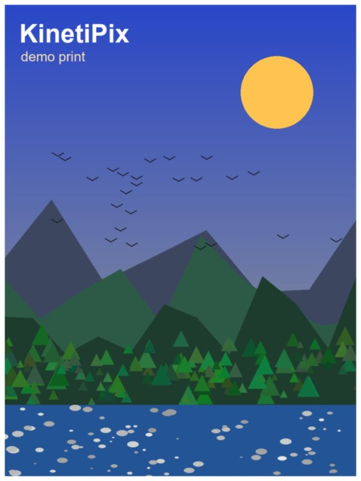

Augmented reality for your prints
Point your phone at a printed photo and watch it move, right on the print. The animation stays pinned to the picture as you walk around it.

Open KinetiPix and aim at a photo from your library. Live hints tell you to hold steady, move closer or find more light.
A gentle vibration confirms the lock. ARCore measures the print so the animation sits exactly on it.
The photo comes alive in a seamless loop. Walk around it: the animation stays pinned to the print.
Add your own photos
Choose a picture from your gallery or photograph the print on your wall. Drag four corners onto its edges and KinetiPix straightens it, checks it has enough detail to track, and adds it to your library.
Private by design
KinetiPix has no internet permission. Your camera feed and photos are processed on your phone and never leave it. No account, no analytics, no ads. Animations are encrypted on your device with a key held in its secure hardware.
Read the privacy policy →Free
$2.99 one-time
Android 9 or newer phones that support Google Play Services for AR.
Yes, completely. KinetiPix does not request internet access at all.
Only photos in your KinetiPix library come to life, so add it first. Then move the phone slowly for a second so the app can measure the print. Very plain photos have too little detail to track. More tips on the support page.
Only on your phone, in the app's private storage. You can delete them in the app, or clear everything by uninstalling. See Delete Your Data.